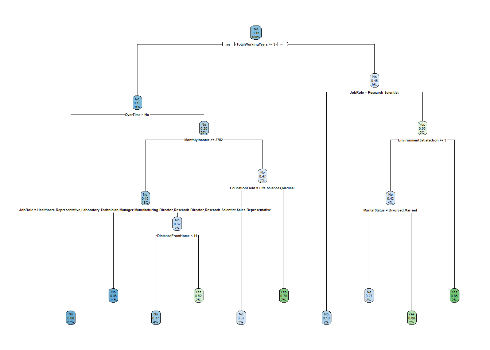

library(tidyverse) # datahåndtering, grafikk og glimpse()
library(rsample) # for å dele data i training og testing
library(rpart) # for fitting decision trees
library(rpart.plot) # for å plotte trær
library(ipred) # for fitting bagged decision trees
library(caret) # for general model fitting og confusionMatrix()
library(forcats) # for rekoding av factor-variable5 Bagging
I dette kapittelt skal vi bruke følgende pakker:
6 Introduksjon til bagging
Merk at (Berk 2016) gjør et poeng av at med bagging gjør vi et større steg vekk fra mer vanlige statistiske prosedyrer. Regresjon og klassifikasjonstrær (og det meste annet vi er mer vant med) gir ett sett av resultater. Med bagging får vi en hel haug av resultater. Prinsippet er rett og slett at man trekker et tilfeldig utvalg av dataene, bygger et klassifikasjonstre og gjør klassifikasjonen. Så gjentar man dette med et nytt tilfeldig utvalg fra det opprinnelige datasettet.1 Så gjentar man dette mange ganger.2
Hver observasjon i det opprinnelige datasettet har da blitt klassifisert mange ganger, men ikke nødvendigvis likt i hvert tre. (Enkle klassifikasjonstrær er nemlig litt ustabile greier). Hvis man har gjort prosedyren 100 ganger, så vil hver observasjon bli klassifisert 100 ganger - en gang i hvert tre. For prediksjon på trainingdata brukes rett og slett en opptelling over alle trærne for hver observasjon. Når (Berk 2016) snakker om “votes”, så er dette som menes: hvert tre har en stemme og så stemmes det over hva som blir utfallet for den enkelte.
Dette betyr at antall trær kan ha noe å si. Forvalget for funksjonen bagging() er 25. Det er en god start, men flere trær gir jo mer stabile resultater.
Husk at klassifikasjonstrær er litt ustabile greier, og små tilfeldige variasjoner kan påvirke en enkelt split. Ved å bruke bagging jevnes de tilfeldige feilene ut slik at man totalt sett skal få et mer stabilt resultat. Altså: at faren for overfitting reduseres. Hvor mange trær som trengs er litt verre å si noe om.
6.1 Empirisk eksempel: Syntetiske data
Vi bruker de syntetiske fødselskohort-dataene. Disse er generert for å etterligne en kohort født i 1996, der utfallsvariabelen felonies angir om personen har begått alvorlige lovbrudd (1) eller ikke (0). Vi fjerner variablene drugs og violence fordi disse er delkomponenter av utfallet. Vi demonstrerer også med Attrition-dataene.
load("data/synthetic_birthCohort96.RData")
synth <- synthetic_birthCohort %>%
select(-drugs, -violence) %>%
mutate(felonies = factor(felonies))
set.seed(426)
synth_split <- initial_split(synth)
training <- training(synth_split)
testing <- testing(synth_split)6.1.1 Klassifikasjonstre som utgangspunkt
Først lager vi et klassifikasjonstre for sammenligning:
klass_tre <- rpart(felonies ~ ., data = training, method = "class")
rpart.plot(klass_tre)
6.1.2 Bagging
Funksjonen bagging() har tilsvarende oppbygning som tidligere modeller. Her angir vi 100 trær med nbagg = 100 og bruker OOB med coob = TRUE:
set.seed(42)
bag <- bagging(felonies ~ ., data = training,
nbagg = 100, coob = TRUE)
bag
Bagging classification trees with 100 bootstrap replications
Call: bagging.data.frame(formula = felonies ~ ., data = training, nbagg = 100,
coob = TRUE)
Out-of-bag estimate of misclassification error: 0.0411 Vi kan legge til justeringer for de enkelte trærne med control = rpart.control():
set.seed(42)
bag2 <- bagging(felonies ~ ., data = training,
nbagg = 100, coob = TRUE,
control = rpart.control(cp = 0.0000001, maxdepth = 20, minbucket = 3))
bag2
Bagging classification trees with 100 bootstrap replications
Call: bagging.data.frame(formula = felonies ~ ., data = training, nbagg = 100,
coob = TRUE, control = rpart.control(cp = 1e-07, maxdepth = 20,
minbucket = 3))
Out-of-bag estimate of misclassification error: 0.0403 Sammenlign med testing-data. Her lager vi prediksjoner fra både det enkle klassifikasjonstreet og bagging-modellen, slik at vi kan sammenligne dem direkte:
testing_pred <- testing %>%
mutate(pred_tre = predict(klass_tre, newdata = testing, type = "class"),
pred_bag = predict(bag, newdata = testing))
confusionMatrix(reference = testing_pred$felonies, testing_pred$pred_tre, positive = "1")Confusion Matrix and Statistics
Reference
Prediction 0 1
0 7193 307
1 0 0
Accuracy : 0.9591
95% CI : (0.9543, 0.9634)
No Information Rate : 0.9591
P-Value [Acc > NIR] : 0.5152
Kappa : 0
Mcnemar's Test P-Value : <2e-16
Sensitivity : 0.00000
Specificity : 1.00000
Pos Pred Value : NaN
Neg Pred Value : 0.95907
Prevalence : 0.04093
Detection Rate : 0.00000
Detection Prevalence : 0.00000
Balanced Accuracy : 0.50000
'Positive' Class : 1
confusionMatrix(reference = testing_pred$felonies, testing_pred$pred_bag, positive = "1")Confusion Matrix and Statistics
Reference
Prediction 0 1
0 7183 302
1 10 5
Accuracy : 0.9584
95% CI : (0.9536, 0.9628)
No Information Rate : 0.9591
P-Value [Acc > NIR] : 0.6287
Kappa : 0.0273
Mcnemar's Test P-Value : <2e-16
Sensitivity : 0.0162866
Specificity : 0.9986098
Pos Pred Value : 0.3333333
Neg Pred Value : 0.9596526
Prevalence : 0.0409333
Detection Rate : 0.0006667
Detection Prevalence : 0.0020000
Balanced Accuracy : 0.5074482
'Positive' Class : 1
Sammenlign accuracy, sensitivity og specificity for de to modellene. Bagging gir typisk bedre og mer stabile resultater enn et enkelt tre fordi de tilfeldige feilene jevner seg ut over mange trær.
6.2 Eksempel med Attrition-data
Vi bruker også Attrition-dataene for å vise at bagging fungerer på tvers av datasett:
attrition <- readRDS("data/Attrition.rds") %>%
select(-EmployeeNumber)
set.seed(426)
attrition_split <- initial_split(attrition)
attr_train <- training(attrition_split)
attr_test <- testing(attrition_split)Klassifikasjonstre, bagging og confusion matrix:
attr_tre <- rpart(Attrition ~ ., data = attr_train, cp = 0.00001, maxdepth = 5,
minbucket = 15, method = "class")
rpart.plot(attr_tre)
set.seed(42)
attr_bag <- bagging(Attrition ~ ., data = attr_train,
nbagg = 500, coob = TRUE)
attr_bag
Bagging classification trees with 500 bootstrap replications
Call: bagging.data.frame(formula = Attrition ~ ., data = attr_train,
nbagg = 500, coob = TRUE)
Out-of-bag estimate of misclassification error: 0.1325 attr_test_pred <- attr_test %>%
mutate(pred_tre = predict(attr_tre, newdata = attr_test, type = "class"),
pred_bag = predict(attr_bag, newdata = attr_test, type = "class"))
confusionMatrix(reference = attr_test_pred$Attrition, attr_test_pred$pred_tre, positive = "Yes")Confusion Matrix and Statistics
Reference
Prediction No Yes
No 288 57
Yes 12 11
Accuracy : 0.8125
95% CI : (0.7688, 0.8511)
No Information Rate : 0.8152
P-Value [Acc > NIR] : 0.5851
Kappa : 0.1636
Mcnemar's Test P-Value : 1.177e-07
Sensitivity : 0.16176
Specificity : 0.96000
Pos Pred Value : 0.47826
Neg Pred Value : 0.83478
Prevalence : 0.18478
Detection Rate : 0.02989
Detection Prevalence : 0.06250
Balanced Accuracy : 0.56088
'Positive' Class : Yes
confusionMatrix(reference = attr_test_pred$Attrition, attr_test_pred$pred_bag, positive = "Yes")Confusion Matrix and Statistics
Reference
Prediction No Yes
No 296 55
Yes 4 13
Accuracy : 0.8397
95% CI : (0.7981, 0.8757)
No Information Rate : 0.8152
P-Value [Acc > NIR] : 0.1258
Kappa : 0.2505
Mcnemar's Test P-Value : 7.543e-11
Sensitivity : 0.19118
Specificity : 0.98667
Pos Pred Value : 0.76471
Neg Pred Value : 0.84330
Prevalence : 0.18478
Detection Rate : 0.03533
Detection Prevalence : 0.04620
Balanced Accuracy : 0.58892
'Positive' Class : Yes
Igjen ser vi at bagging typisk gir et resultat som er noe mer stabilt enn et enkelt tre. Merk at forbedringen ikke alltid er like dramatisk – det kommer an på dataene og det underliggende mønsteret.
6.3 Out-of-bag data (OOB)
Bagging kan brukes på training data og testing data som vi har gjort før. Men en ulempe med dette er jo at man får et litt mindre datasett å tilpasse modellene med. Merk at bagging i utgangspunktet baserer seg på å trekke et tilfeldig utvalg fra de opprinnelige dataene. Så for hvert tre er det en del observasjoner som ikke blir brukt til å bygge treet. Altså har vi et testing-datasett umiddelbart tilgjengelig!
Altså: hvis man bruker 70% av dataene til å bygge hvert enkelt tre, så har man også 30% testingdata tilgjengelig for å gjøre klassifiseringen på det enkelte treet. Dette testing-datasettet kalles out-of-bag (OOB) data, men er altså i prinsippet det samme som et testingdatasett.
Forvalget i bagging() er imidlertid å ikke bruke OOB. For å gjøre dette legges det til argumentet coob = TRUE og man får utregnet klassifikasjonsfeilen i output.
6.4 Mer tuning
Man kan si at bagging består av to deler: 1) en grunnleggende klassifikasjonsteknikk (noen ganger omtalt som “base learner”), og 2) en bootstrapping med gjentatte estimeringer på utvalg av data.
Forvalget i bagging() er å bruke klassifikasjonstrær med rpart(). Det betyr at tuning som kan gjøres med bruk av rpart() også kan gjøres med bagging(). Dette gjøres ved å legge til argumentet control = rpart.control():
set.seed(42)
bag_tuned <- bagging(felonies ~ ., data = training,
nbagg = 500, coob = TRUE,
control = rpart.control(maxdepth = 6, cp = 0.0001))
bag_tuned
Bagging classification trees with 500 bootstrap replications
Call: bagging.data.frame(formula = felonies ~ ., data = training, nbagg = 500,
coob = TRUE, control = rpart.control(maxdepth = 6, cp = 1e-04))
Out-of-bag estimate of misclassification error: 0.0403 Det viktige poenget akkurat nå er egentlig ikke all tuning som er mulig å gjøre i bagging, men at det er bygget på en annen underliggende algoritme. Vi bruker i praksis ikke bagging noe særlig alene, men derimot er random forest en variant av bagging med litt ekstra saker. Slik sett er bagging å regne som en byggesten til random forest sammen med klassifikasjonstrær. Så derfor skal vi ikke bruke så mye tid på bagging, men gå raskt videre til random forest.
Dette er altså det vi ofte kaller tilfeldig utvalg med tilbakelegging.↩︎
Bagging ligner altså veldig på det vi i vanlig statistikk kaller for bootstrapping. Men i bootstrapping er ofte formålet å korrigere standardfeilene eller noe slikt og ikke så mye punktestimatet. Skjønt, det går an å bruke bagging på regresjonsmodeller også, og da tror jeg forskjellen mot bootstrapping er mest semantisk.↩︎